10/07/2026 — Rung thất ở một bệnh nhân trẻ khi gắng sức
Bản dịch tiếng Việt của bài "Ventricular Fibrillation in a young patient during exertion" – Dr. Smith’s ECG Blog. Giữ nguyên toàn bộ 12 hình ảnh của bản gốc.

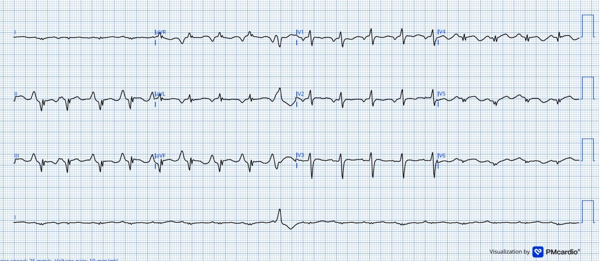
Ca này do Jack Cahill gửi — một sinh viên y khoa ở Anh, một “thần đồng” điện tâm đồ trẻ tuổi (giống như Hans Helseth).
Bệnh nhân khoảng 20 tuổi này ngã quỵ do ngừng tim khi đang chơi bóng đá, không có tiền triệu nào được ghi nhận/khai báo.
Bệnh nhân được phát hiện đang rung thất (ventricular fibrillation), phải hồi sinh tim phổi và năm lần sốc khử rung mới đạt được tái lập tuần hoàn tự nhiên (ROSC), khoảng 20 phút sau khi ngã quỵ.
Đây là điện tâm đồ sau ROSC của bệnh nhân (~20 phút sau đó):

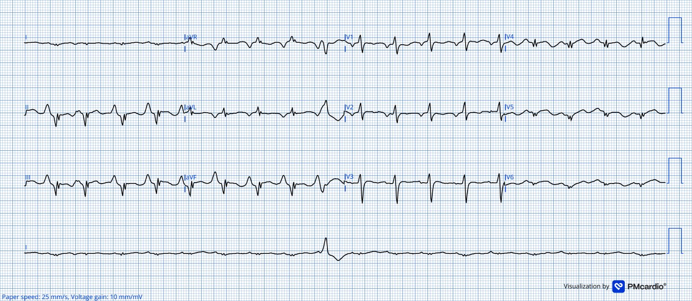
Bạn nghĩ sao? Bệnh nhân có cần vào phòng thông tim (cath lab) không?
Đây là một ‘điện tâm đồ kiểu bệnh phổi’ rõ rệt: có P phế, điện thế giảm, sóng R ưu thế ở V1 kèm sóng T đảo ngược (dù nông) ở V1-4. Cũng có “dấu hiệu Schamroth” (Schamroth’s Sign) ở chuyển đạo I (điện thế rất thấp, thường do tim thẳng đứng trong bệnh phổi tắc nghẽn mạn tính (COPD) dẫn tới trục QRS thẳng đứng, khiến chuyển đạo I có điện thế rất thấp — độ nhạy và độ đặc hiệu chưa rõ)
Cũng có các phức bộ Qr ở các chuyển đạo dưới-bên kèm ST-T to ra. Luôn phải nghĩ tới thiếu máu cục bộ cấp, bất kể tuổi của bệnh nhân. Ngừng tim do VF thường gặp nhất là do thiếu máu cục bộ. Đưa người bệnh này vào phòng thông tim sẽ không phải là sai. Sóng T tối cấp ở V4 và V5 – giống hình ảnh nhồi máu.
Rất có thể có nhiều yếu tố cùng góp phần tạo nên bản ghi này, bao gồm sốc tim, choáng cơ tim sau ngừng tim với giảm sức co bóp và giảm thể tích nhát bóp, khả năng suy thất phải và các nguyên nhân cơ học khác làm giảm dòng máu đi tới, chồng lên một bệnh lý cấu trúc tim có sẵn.
Tuy nhiên, Queen nhận ra đây không phải OMI:

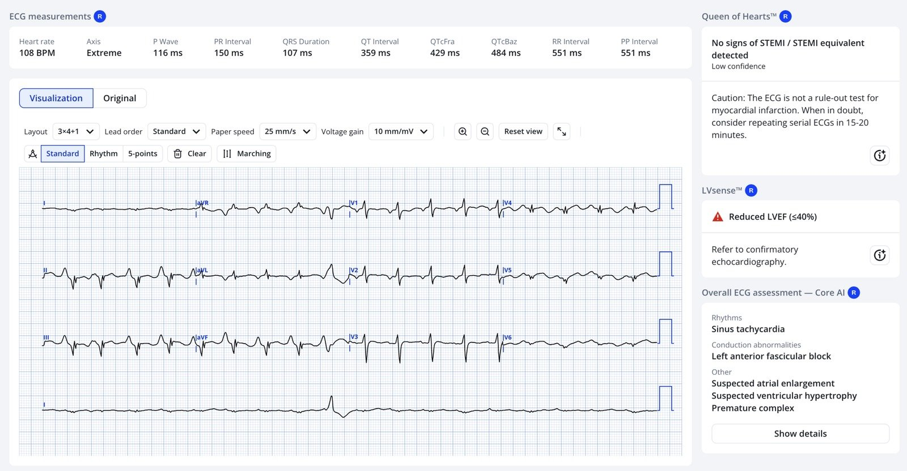
Hãy để ý rằng Queen cũng cho rằng LVEF < 40%
Bệnh nhân được chuyển đến khoa hồi sức tích cực (ICU) để chăm sóc sau ngừng tim, tại đây bệnh nhân được đặt nội khí quản, thở máy và điều trị bằng các biện pháp bảo vệ thần kinh. Bệnh nhân cần noradrenalin 0.29 mcg/kg/phút để duy trì huyết áp động mạch đo xâm lấn ~75/60 mmHg (MAP ~65 mmHg), tạo ra áp lực mạch hẹp, phù hợp với choáng cơ tim sau ngừng tim chồng lên một bệnh cơ tim / rối loạn chức năng thất có thể có sẵn. CT sọ não cũng không có gì bất thường.
Đây là điện tâm đồ khi bệnh nhân đang nằm ICU:

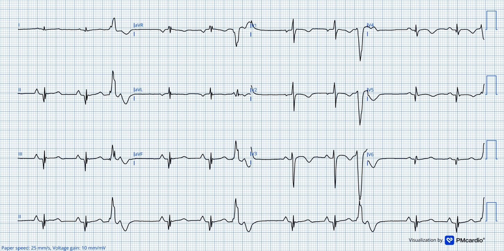
Nhịp xoang với PR ~170ms, QRS ~105ms, trục QRS ~-65, QTc ~ 440ms.
Lại thấy điện thế rất thấp ở chuyển đạo I (dấu hiệu Schamroth), có lẽ do trục QRS dịch chuyển thẳng đứng/sang phải.
P phế – biên độ sóng P tăng ở chuyển đạo II, gợi ý có thể lớn nhĩ phải hoặc quá tải áp lực.
Sóng R ưu thế ở V1, với tăng tiến sóng R đảo ngược qua các chuyển đạo trước tim, chuyển từ hình dạng Rs sang phức bộ Qr. Điều này cho thấy hoạt hóa thất bất thường đáng kể và gợi ý bệnh lý cấu trúc thất phải, có thể tổn thương cả hai thất.
Sóng T đảo ngược có ở V1-3 rất phù hợp với bệnh lý thất phải, nhưng sóng T đảo ngược ở V4-5 có thể do thất phải hoặc là dấu hiệu tái tưới máu. Cũng thấy các sóng Q bệnh lý lớn ở các chuyển đạo II, III, aVF, V4-6. Nhiều khả năng điều này phản ánh khử cực–tái cực thất phải bất thường liên quan đến bệnh cấu trúc ưu thế thất phải có sẵn, nhưng cũng gợi khả năng tổn thương cả thất phải lẫn thất trái.
Queen cũng thấy có thể có tái tưới máu:

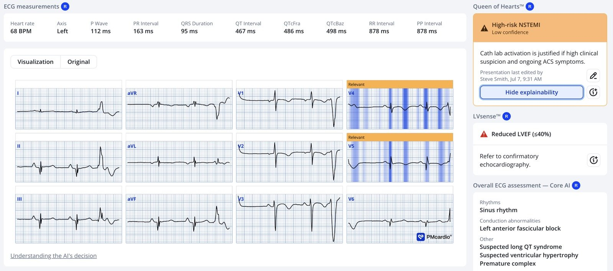
Có nhiều ngoại tâm thu thất (PVC), chủ yếu có hình dạng âm ở V1-3 (hình dạng rS), gợi ý các PVC này nhiều khả năng lan truyền từ phải sang trái (đi xa khỏi V1). Các phức bộ dương ở chuyển đạo II và III, gợi ý chúng có véc-tơ hướng xuống dưới. Chúng ta vừa kịp bắt được vùng chuyển tiếp sóng R muộn ở cuối dải nhịp, gợi ý rằng, gộp lại, các PVC này xuất phát từ khoảng đường ra thất phải. Nhiều khả năng còn có hoạt hóa thất-nhĩ ngược dòng, điều này không hiếm gặp. Chúng ta thấy bằng chứng của điều này ở đoạn chuyển tiếp R-T.
Đây là siêu âm tim:

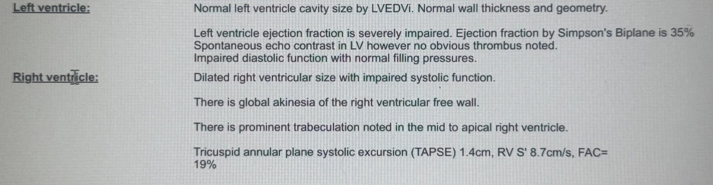
Vậy thì…
- Chẩn đoán nhiều khả năng nhất là gì?
- Cơ chế nhiều khả năng nhất gây ngừng tim ở bệnh nhân này là gì?
Bệnh nhân được chuyển từ ICU xuống đơn vị chăm sóc tim cấp, tại đây bệnh nhân vẫn ổn định và được đánh giá chuẩn bị cấy máy khử rung tim dưới da (subcutaneous ICD).
MRI tim xác nhận nguyên nhân ngừng tim của bệnh nhân này không phải do thiếu máu cục bộ – tóm tắt:
Giãn và rối loạn chức năng tâm thu cả hai thất
Sẹo/xơ hóa lan rộng ở cả hai thất, không do thiếu máu cục bộ
Ngấm thuốc muộn gadolinium (LGE) ở thượng tâm mạc và lớp giữa cơ tim tại thành bên, vách dưới, mỏm và thành tự do thất phải; thành tự do thất phải cũng vô động
Không có bằng chứng viêm; van tim, các nhĩ và các động mạch lớn bình thường
Trả lời:
- Bệnh cơ tim gây loạn nhịp (Arrhythmogenic Cardiomyopathy, ACM) (trong ca này là ở cả hai thất)
- Xem bài này để có nhiều thông tin về bệnh cơ tim thất phải gây loạn nhịp (ARVC) (trước đây gọi là loạn sản thất phải gây loạn nhịp – ARVD)
- Ca này không có sóng Epsilon. Nếu có, sóng Epsilon rất đặc hiệu, nhưng không nhạy.
- Thường trong ARVD có sóng T đảo ngược ở các chuyển đạo trước tim bên phải.
- ACM được định nghĩa là một bệnh của cơ tim, có kiểu hình là sự thay thế xơ-mỡ tiến triển, là nền tảng của sự suy giảm chức năng tâm thu thất. Bệnh có thể liên quan đến thất trái hoặc thất phải (1).
- Nhịp nhanh thất qua trung gian sẹo
- Cơ chất gây loạn nhịp trong ARVC phức tạp và không đồng nhất. Các bất thường cấu trúc, gồm thay thế xơ-mỡ, sinh mỡ (adipogenesis) và vùng bờ sẹo, tạo ra các vùng dẫn truyền không đồng đều, tạo thuận lợi cho vào lại. Tính không đồng nhất về tế bào, với tỷ lệ khác nhau của tế bào cơ tim bệnh lý, nguyên bào sợi, tế bào mỡ và tế bào viêm, càng góp phần gây mất ổn định điện học. Rối loạn chức năng thể liên kết (desmosome) thúc đẩy mất ghép nối cơ học và điện học, chết tế bào cơ tim và phá vỡ liên kết khe (gap junction), dẫn đến chậm dẫn truyền. Các bất thường thứ phát về chức năng kênh natri, tái cực và xử lý calci nội bào, cùng với các đợt viêm tái diễn, càng làm tăng tính gây loạn nhịp (2). Tổng hợp lại, những thay đổi cấu trúc và điện sinh lý này tạo ra một cơ chất dễ xảy ra nhịp nhanh thất vào lại vòng lớn (macro-re-entrant) ác tính và rung thất, đồng thời thúc đẩy rối loạn chức năng thất tiến triển (3).
Điện tâm đồ gợi ý một cơ chất rất dễ gây loạn nhịp:
- Bất thường tái cực nguyên phát, gợi ý ít nhất có tổn thương thất phải
- Các PVC kiểu đường ra thất phải, có thể đóng vai trò khởi kích cho dẫn truyền không đồng nhất qua mô sẹo, để VT vòng vào lại hình thành và duy trì, rồi thoái hóa thành rung thất
- Bằng chứng của bệnh tim cấu trúc đáng kể và khả năng tổn thương cả hai thất
Chẩn đoán:
- Bệnh cơ tim gây loạn nhịp hai thất
Xem thêm 2 ca và nhiều thông tin hơn về bệnh cơ tim thất phải (trước đây gọi là loạn sản thất phải gây loạn nhịp, hay ARVD) (điện tâm đồ của cả hai ca đều được dán ở đây).
Syncope in a young man (3 điện tâm đồ của cùng một bệnh nhân)

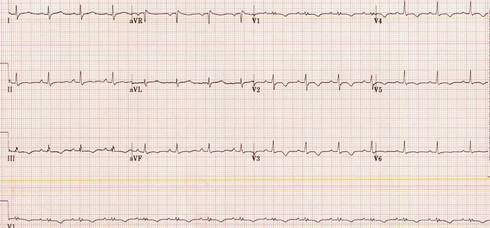

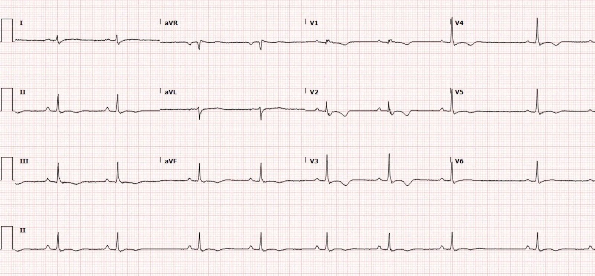

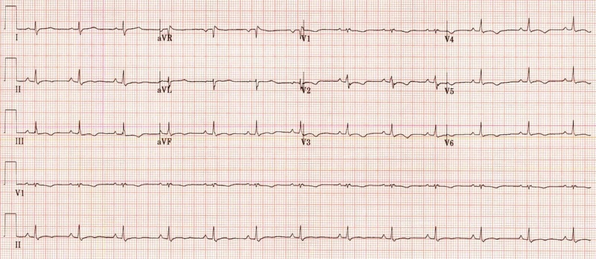

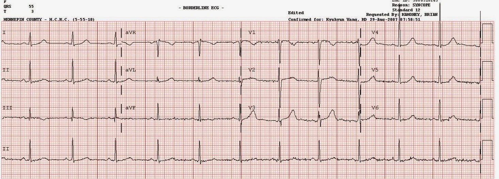

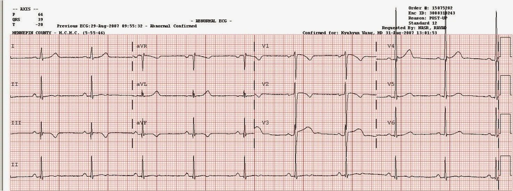
= = =
Điểm cần học:
- Ngừng tim do VF thường gặp nhất là do thiếu máu cơ tim cục bộ cấp, và nên có ngưỡng thấp để đưa bệnh nhân vào phòng thông tim khi nghi ngờ OMI.
- Điện tâm đồ sau ROSC có thể giống OMI. Điều thiết yếu là ghi các điện tâm đồ liên tiếp để theo dõi diễn tiến động.
- Mọi dạng bệnh cơ tim đều là cơ chất có thể gây ngừng tim và phải được cân nhắc trong đánh giá ban đầu sau ngừng tim. Điện tâm đồ là một phần trung tâm của việc này.
- Bệnh cơ tim gây loạn nhịp, trước đây gọi là bệnh cơ tim thất phải gây loạn nhịp, có thể và thực sự tổn thương cả hai thất, và phải đánh giá điện tâm đồ một cách tổng thể. Sóng epsilon kinh điển có thể không xuất hiện trên điện tâm đồ bề mặt!
Tài liệu tham khảo
1. Corrado D, Zorzi A, Cipriani A, Bauce B, Bariani R, Beffagna G, và cs. Evolving Diagnostic Criteria for Arrhythmogenic Cardiomyopathy. Tạp chí J Am Heart Assoc, năm 2021 (Sep 21);10(18):e021987. doi:10.1161/JAHA.121.021987
2. Corrado D, Zorzi A, Cipriani A, Bauce B, Bariani R, Brunetti G, và cs. Scarring/arrhythmogenic cardiomyopathy. Tạp chí Eur Heart J Suppl, năm 2023 (May 1);25(Supplement_C):C144–54. doi:10.1093/eurheartjsupp/suad017
3. Andrews CM, Srinivasan NT, Rosmini S, Bulluck H, Orini M, Jenkins S, và cs. Electrical and Structural Substrate of Arrhythmogenic Right Ventricular Cardiomyopathy Determined Using Noninvasive Electrocardiographic Imaging and Late Gadolinium Magnetic Resonance Imaging. Tạp chí Circ Arrhythm Electrophysiol, năm 2017 (Jul);10(7):e005105. doi:10.1161/CIRCEP.116.005105
= = =
==================================
BÌNH LUẬN CỦA TÔI, bởi KEN GRAUER, MD (10/7/2026):
Cách tiếp cận tiết kiệm thời gian của Dr. Smith đối với ca hôm nay quan trọng đến mức — tôi muốn “đi lại” các bước của ông thêm lần thứ 2.
- Bệnh nhân trong ca hôm nay là một nam thanh niên, không chấn thương và không có tiền triệu — đột ngột ngã quỵ khi đang chơi bóng đá, và được phát hiện đang rung thất – VFib (Ventricular Fibrillation).
- ROSC đạt được sau 5 lần sốc. Tôi đã đặt lại điện tâm đồ sau hồi sức ban đầu đã được ghi, ở Hình 2 bên dưới.
Các điểm MẤU CHỐT trong đánh giá của Dr. Smith gồm:
- Dù có những yếu tố có thể là thiếu máu cục bộ trong điện tâm đồ #1 — “bức tranh” tổng thể gợi ý bệnh phổi nặng, và không phải OMI cấp.
- Dù thông tim sớm không phải là không phù hợp trong tình huống này — việc nhận thức rằng vấn đề chính dường như không phải là tắc động mạch vành cấp là thiết yếu để xử trí tối ưu, vì nhận thức này chuyển trọng tâm sang đánh giá các nguyên nhân khác gây ngừng tim bất ngờ ở bệnh nhân trẻ này. Tôi đã liệt kê các nguyên nhân khác chính cần cân nhắc ở Hình 1) bên dưới.
= = =
Hình 1: Các nguyên nhân đột tử ở người trẻ tuổi (Tài liệu tham khảo gồm Abbas và cs.: J Clin Med Res 15(1):1-9, 2023 — và — Tseng & Nakasuka: JAMA 333(11):981-996, 2025).

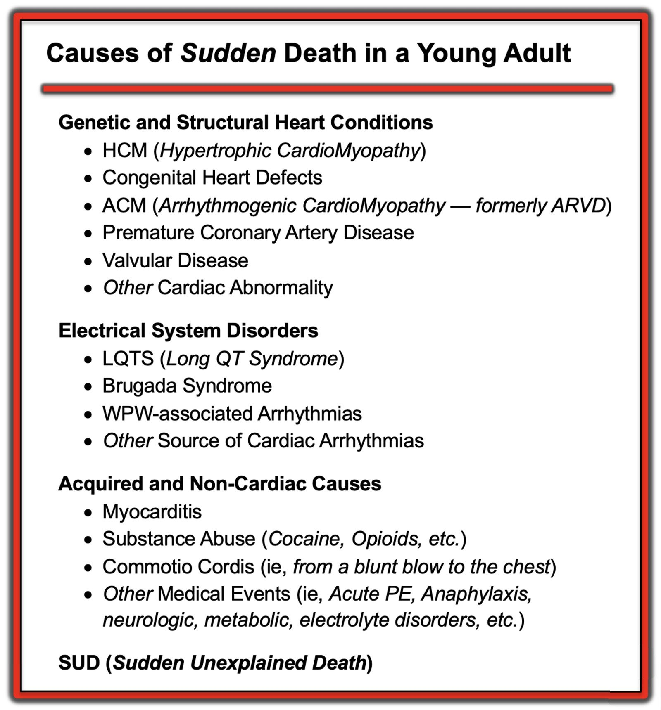
LƯU Ý: Như Dr. Smith đã nêu — thuật ngữ “ARVD” (loạn sản thất phải gây loạn nhịp – Arrhythmogenic Right Ventricular Dysplasia) đã được thay bằng ACM (bệnh cơ tim gây loạn nhịp – Arrhythmogenic CardioMyopathy), nhằm thừa nhận thực tế rằng thất phải và/hoặc thất trái đều có thể bị tổn thương ở các mức độ khác nhau.
= = =
Điện tâm đồ sau hồi sức ban đầu
“Mắt” chúng ta có xu hướng quen với những gì chúng ta thường thấy — đó là lý do đôi khi khó nhận ra những gì chúng ta không quen thấy. Điều chúng ta không quen thấy ở một bệnh nhân ngừng tim khởi phát tự phát do rung thất — là một điện tâm đồ trông giống điện tâm đồ ban đầu của ca hôm nay.
- Để dễ nhận ra — tôi đã ghi chú ở ô dưới của Hình 2 một loạt các dấu hiệu MẤU CHỐT trên điện tâm đồ sau hồi sức, những dấu hiệu lẽ ra phải ngay lập tức gợi ra một nguyên nhân ngừng tim rất khác với OMI ở bệnh nhân này.
Điều “đập vào mắt tôi” ở Hình 2:
- Nhịp là nhịp nhanh xoang với tần số ~110/phút (các mũi tên ĐỎ ở chuyển đạo II đánh dấu sóng P xoang). Các sóng P xoang rất cao và nhọn này cho thấy có RAA (bất thường nhĩ phải – Right Atrial Abnormality) đáng kể — và — mức độ RAA này hầu như luôn đi kèm với RVH (phì đại thất phải – Right Ventricular Hypertrophy) nặng.
- Vượt ra ngoài phần cốt lõi: Có một PAC (mũi tên XANH LAM ở chuyển đạo II). Trong bối cảnh RAA rõ rệt — tôi diễn giải khía trên PAC có mũi tên XANH LAM này là gợi ý bất thường hai nhĩ (tức là cả RAA lẫn LAA).
- Biên độ QRS giảm rất mạnh! Như đã nêu trong bài ôn tập về Các nguyên nhân gây điện thế thấp (BẤM VÀO ĐÂY) — cả “choáng” cơ tim lẫn nhiều loại bệnh cơ tim đều nổi bật trong số các nguyên nhân tiềm tàng! Quả thật hiếm khi thấy điện thế nhỏ xíu như chúng ta thấy ở các chuyển đạo ngực bên trong Hình 2.
- Như Dr. Smith đã nêu — dấu hiệu Schamroth thể hiện nổi bật qua điện thế gần như không đáng kể của sóng P, QRS và sóng ST-T ở chuyển đạo I (trong hình chữ nhật VÀNG). Sau nhiều thập kỷ tìm kiếm các ví dụ về dấu hiệu Schamroth (kể từ khi Barney Marriott khiến tôi chú ý tới dấu hiệu ít gặp nhưng sâu sắc này) — hiếm khi thấy điện thế thực sự gần như không đáng kể như thấy rõ ở chuyển đạo I tại đây (gần như tình trạng duy nhất khác có thể gây ra điều này là đảo điện cực tay-chân cả hai bên, điều không có ở đây). Như trong Bình luận của tôi ở bài ngày 18 tháng Ba năm 2026 — sự hiện diện của dấu hiệu Schamroth (đặc biệt khi đi kèm với RAA rõ rệt mà chúng ta thấy ở Hình 2) — ngay lập tức cho chúng ta biết có một dạng bệnh phổi nặng và lâu năm nào đó!
- Các dấu hiệu điện tâm đồ khác của bệnh phổi nặng gồm: i) Trục mặt phẳng trán không xác định (QRS chủ yếu âm ở mỗi chuyển đạo dưới kèm QRS gần như bằng không ở chuyển đạo I); — ii) Sóng R=S ở chuyển đạo V1 (bình thường sóng S chiếm ưu thế ở V1); — iii) Điện thế thấp toàn bộ; — và, iv) Sóng S ở nhiều chuyển đạo (Xem Bình luận của tôi trong bài ngày 12 tháng Hai năm 2023 — để biết “Quan điểm của tôi” về RVH).
- Ngoài tất cả những điều trên — còn có bằng chứng về sự góp phần của thiếu máu cục bộ vào bệnh cảnh của bệnh nhân này, dưới dạng: i) Phân mảnh QRS (khía) ở nhiều chuyển đạo (II,III,aVF; aVR,aVL; V4,V5,V6) — dấu hiệu này gợi ý “sẹo” do bệnh lâu năm; — ii) Sóng Q sâu và rộng ở các chuyển đạo dưới (các mũi tên VÀNG); — iii) PVC; — và, iv) Như Dr. Smith đã nêu — sóng ST-T tối cấp ở các chuyển đạo ngực bên . Gộp lại và xét trong bối cảnh — không có gì ngạc nhiên khi bệnh nhân này đến viện với sốc và ngừng tim.
= = =
ĐIỀU CỐT LÕI:
ACM không phải là rối loạn thường gặp trong dân số chung. Tôi đã trải qua nhiều năm mà không gặp một ca nào ngoài những gì đọc trong sách giáo khoa. Nhưng với vai trò là nơi tiếp nhận và chia sẻ những ca chúng ta gặp — ở những người trẻ tuổi có biểu hiện loạn nhịp thất ác tính (như bệnh nhân hôm nay) — cần nhanh chóng nghĩ tới ACM (bệnh cơ tim gây loạn nhịp – Arrhythmogenic CardioMyopathy) khi thấy một điện tâm đồ như ở Hình 2 (Xem Bình luận của tôi trong bài ngày 3 tháng Sáu năm 2023 — để biết thêm về ARVD/ACM).
= = =
Hình 2: Tôi đã ghi chú các dấu hiệu MẤU CHỐT trên điện tâm đồ ban đầu của ca hôm nay.

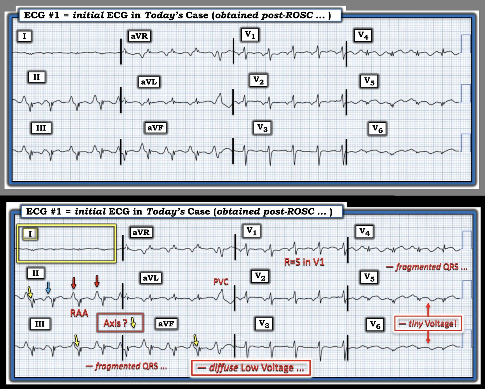
= = =
= = =